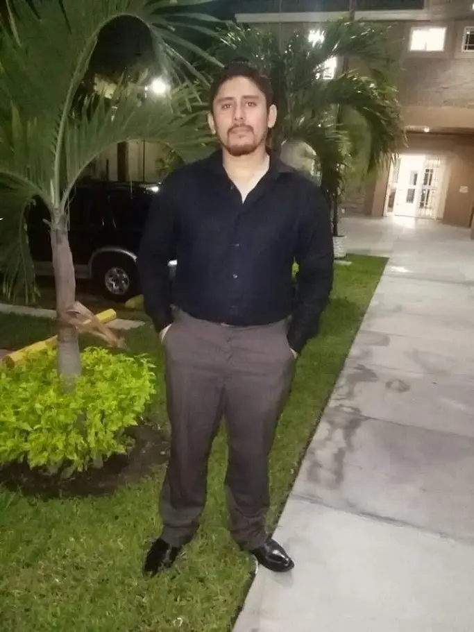

Cesar Gregorio Carpio Lopez | WDD 130

Welcome! My name is Cesar Carpio, I am from San Salvador, El Salvador. I am very passionated for welding, residential and automotive electrical systems. I am always looking for new tools, techniques and tecnologies to sharp my skills. I thirve on every single challenge because they make me grow. I am so excited about learn how to develop a Website and it will help me with my career at Software development too much.